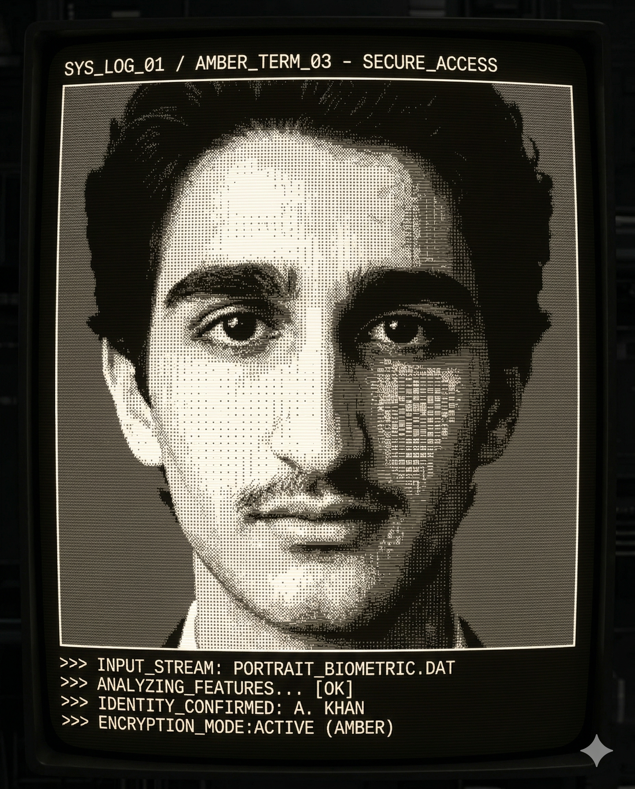

About Me

Greetings, I'm Raphael Sebag. I bridge the gap between low-level system architecture and offensive cybersecurity.
Currently pursuing a Bachelor in Cybersecurity at Epitech Paris, my technical arsenal ranges from crafting custom x86 Kernels and handling core banking logic in COBOL, to hunting vulnerabilities in Bug Bounties and dominating CTFs.
I am fluent in C/C++, Assembly, Go, and Python, backed by robust Cloud & DevOps architecture skills. I approach software development with a hacker's mindset: you can only truly secure a system if you know exactly how to break it.
Beyond the terminal, my strategic thinking and analytical skills extend to Chess (1700 ELO), Astrophysics, and Robotics. I also channel my creativity into music, playing the piano, drums, and saxophone.
System active...
Skills & Technologies
[ Languages & Scripting ]
> C/C++, C#, Python, Go, Java, Assembly, HolyC, COBOL
[ Web & Data ]
> HTML/CSS, JavaScript/TypeScript, SQL, MySQL, PostgreSQL, MongoDB
[ Cloud & DevOps ]
> Docker, Kubernetes, AWS, GCP, Git, CI/CD, Jira
[ Offensive Security & Systems ]
> CTF HackTheBox (-100h), Penetration Testing, Linux (bash, Vim), TCP/IP protocols
Operations & Projects
- > 1st Place - Hack & Juice: Winner (Paris ranking) of the national offensive cybersecurity competition (Epitech, 2025).
- > MyOS (Kernel X86): Development of a 32-bit OS "from scratch" in C and Assembly (bootloader, memory management, system calls).
- > COBOL Projects:Convert Devices project and Core Banking System
- > Confidential Mission: Secured fullstack development on a high-exposure site for a political figure.
- > Bug Bounty & CTF: Active participation in public programs (vulnerability research) and over 100 hours on HackTheBox.
- > Freelance Fullstack: Design of web and data applications for various clients using modern stacks.
- > 42 pool: Two intensive, full-time C and algorithmic immersion bootcamps completed.
> Repo project ⬆️: github.com/RaphEpi6
> Repo project ⬆️: github.com/RaphEpi6
> Repo project ⬆️: github.com/RaphEpi6
> Repo project ⬆️: github.com/RaphEpi6
> Repo project ⬆️: github.com/RaphEpi6
> Repo project ⬆️: github.com/RaphEpi6
> Repo project ⬆️: github.com/RaphEpi6
Establish Connection
> Email: raphaelsebag71@gmail.com
> Phone: 06 47 64 37 18
> Location: Paris 75020
> GitHub: github.com/RaphEpi6
[ Interests ]
> Chess (ELO 1700 Blitz), Astrophysics, Robotics, Music (Piano, Drums, Saxophone)
Awaiting input...